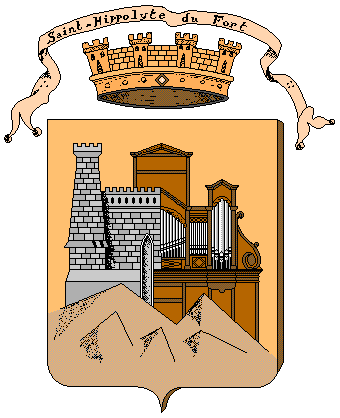

L'orgue du
Grand Temple de
l'Église Réformée de
Saint-Hippolyte
du-Fort
(Gard, FRANCE)
Plan du relevé
L'orgue duGrand Temple de
|
|
|
Présentation Console Buffet Tuyauterie |
 |
Historique Archives Mécanique Soufflerie |
|
Musique |
||